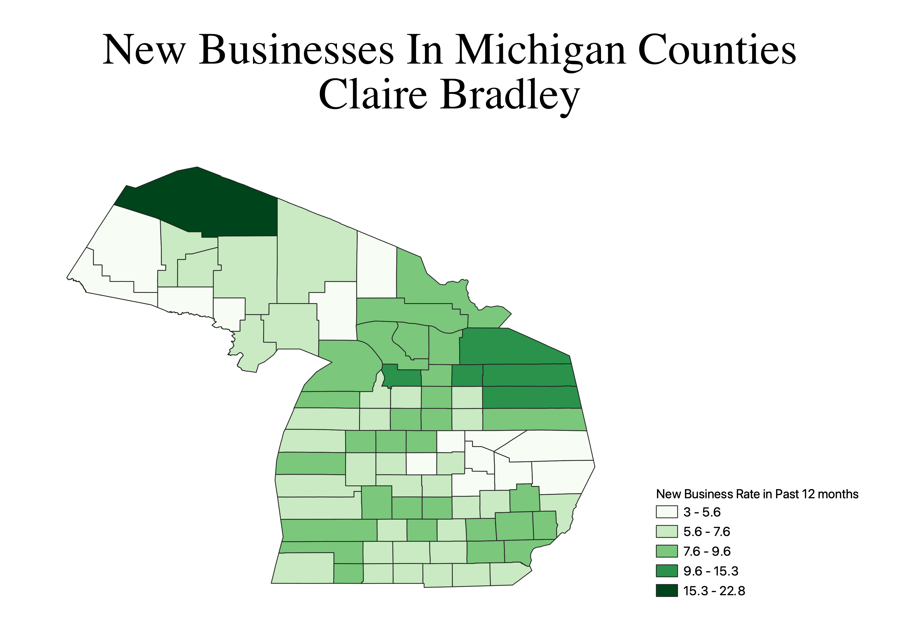

Homework 7: Census data choropleth
Claire Bradley
This map shows the rates of new businesses in each county popping up in the past 12 months. I was really interested in this because I hypothesized that the counties with college towns would have high rates of new businesses because there is so much turnover and there is always a market for new goods and services changing with the trends. The data did not support this, however there could be other factors. It would be interesting to compare this to post-COVID.

Data used for this project
CSV dataset
Link to shapefile